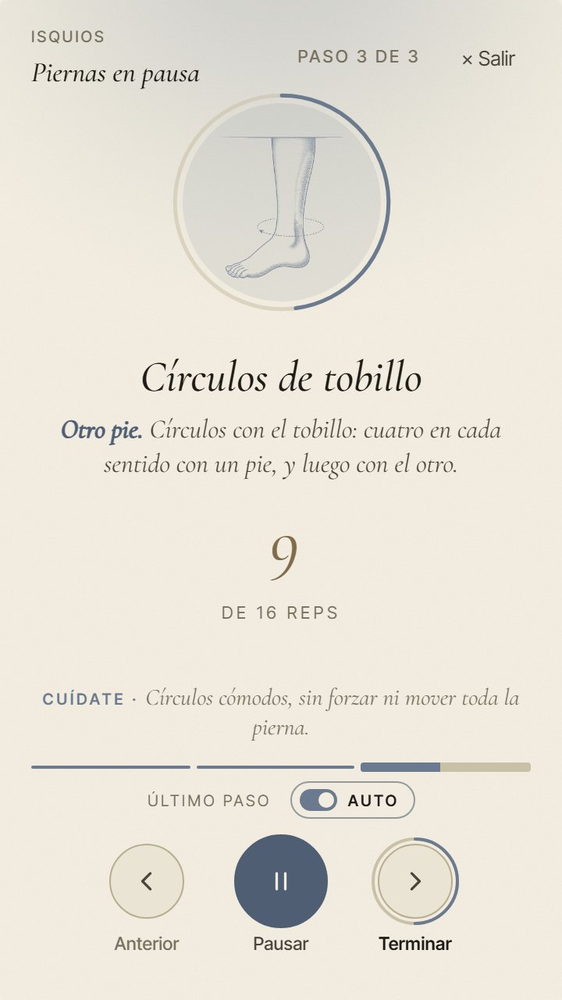
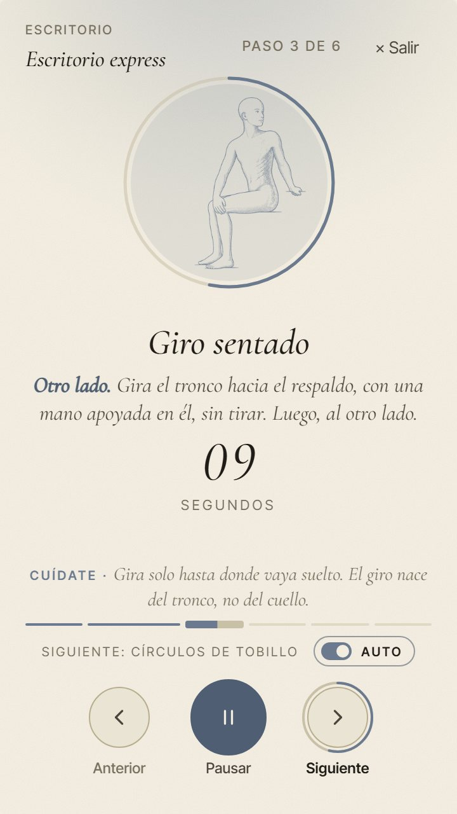
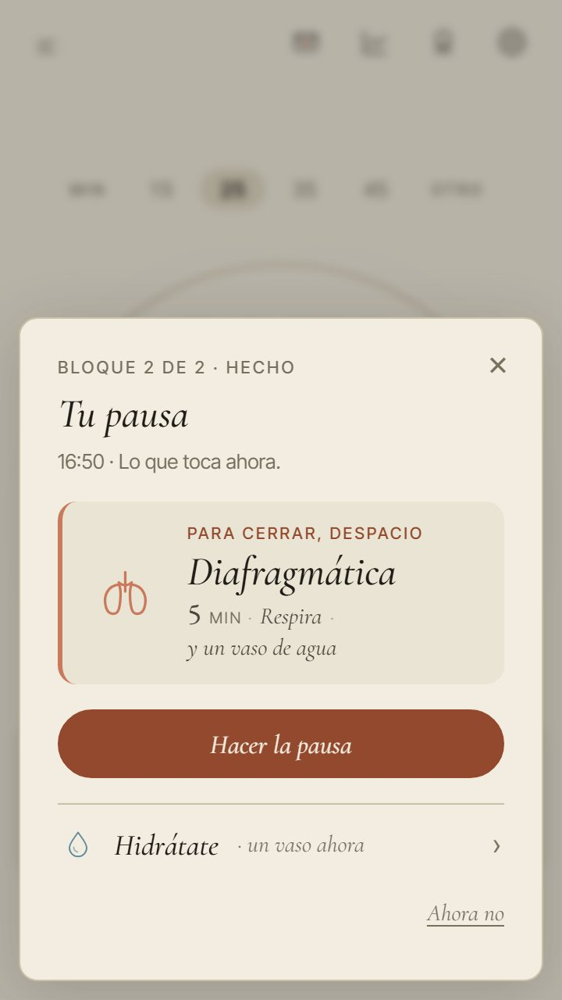
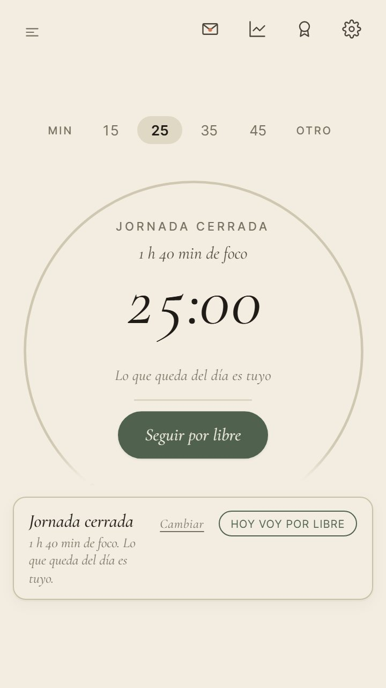
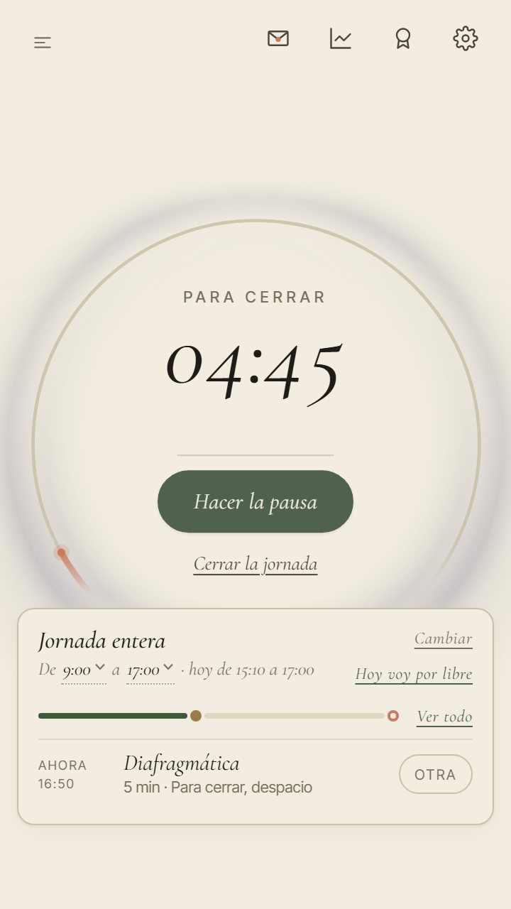
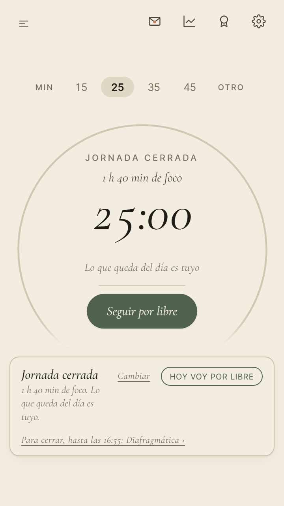
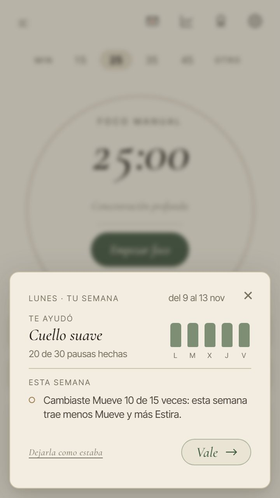
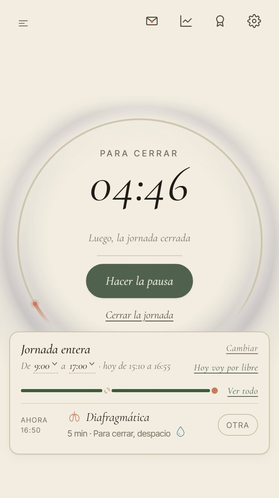
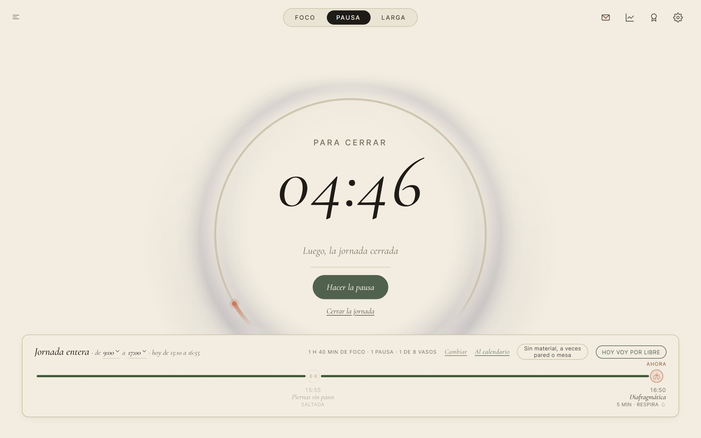

<title>Tres arreglos menores</title>
<meta name="claude:viewport-fit-sides" content="cover">
<link rel="preconnect" href="https://fonts.googleapis.com">
<link rel="preconnect" href="https://fonts.gstatic.com" crossorigin>
<link rel="stylesheet" href="https://fonts.googleapis.com/css2?family=EB+Garamond:ital,wght@0,400;0,500;1,400&family=Inter+Tight:wght@400;500;600&display=swap">
<style>
/* Una columna de papel y tinta, como las páginas «Montado»: cada arreglo con lo de hoy (terracota)
   y sus opciones (oliva la recomendada), fotos de la app de verdad a 360 × 640. */
:root{
  --paper:#F2EDE0;--card:#FBF8F1;
  --ink:#1F1C17;--ink-2:#4A453C;--ink-3:#77705F;
  --line:#C9C0A8;
  --olive:#3E5A3A;--olive-soft:rgba(62,90,58,.12);
  --terra:#A85E43;--terra-soft:rgba(168,94,67,.12);
  --display:'EB Garamond',Georgia,'Times New Roman',serif;
  --ui:'Inter Tight',system-ui,-apple-system,'Segoe UI',sans-serif;
}
@media (prefers-color-scheme: dark){:root:not([data-theme="light"]){
  --paper:#1d1a14;--card:#2c271f;--ink:#EDE5D3;--ink-2:#c0b49e;--ink-3:#B2A995;--line:#4d4536;
  --olive:#98B58B;--olive-soft:rgba(122,154,109,.16);--terra:#E8A98F;--terra-soft:rgba(232,169,143,.14);color-scheme:dark;
}}
:root[data-theme="dark"]{
  --paper:#1d1a14;--card:#2c271f;--ink:#EDE5D3;--ink-2:#c0b49e;--ink-3:#B2A995;--line:#4d4536;
  --olive:#98B58B;--olive-soft:rgba(122,154,109,.16);--terra:#E8A98F;--terra-soft:rgba(232,169,143,.14);color-scheme:dark;
}
*{box-sizing:border-box}
body{margin:0;background:var(--paper);color:var(--ink);font-family:var(--ui);font-size:16px;line-height:1.55;-webkit-text-size-adjust:100%}
main{max-width:880px;margin:0 auto;padding-left:max(16px,env(safe-area-inset-left,0px));padding-right:max(16px,env(safe-area-inset-right,0px));padding-block:40px 72px}
h1,h2,h3{font-family:var(--display);font-style:italic;font-weight:400;line-height:1.15;margin:0;text-wrap:balance}
h1{font-size:clamp(32px,6vw,44px)}
h2{font-size:clamp(23px,4vw,28px);margin:44px 0 10px;padding-top:22px;border-top:1px solid var(--line)}
h3{font-size:22px;margin:30px 0 8px}
p{margin:0 0 12px;color:var(--ink-2);max-width:68ch}
strong{color:var(--ink);font-weight:500}
.eyebrow{font-size:12px;letter-spacing:.14em;text-transform:uppercase;color:var(--ink-3);margin-bottom:10px}
.lead{font-family:var(--display);font-size:21px;color:var(--ink);max-width:62ch;margin-top:14px}
.t{font-size:12px;letter-spacing:.12em;text-transform:uppercase;margin:18px 0 6px}
.t.hoy{color:var(--terra)}.t.luego{color:var(--olive)}
.fotos{display:grid;gap:14px;grid-template-columns:repeat(auto-fill,minmax(230px,1fr));margin:12px 0 16px}
figure{margin:0;min-width:0}
figure img{display:block;width:100%;height:auto;border:1px solid var(--line);border-radius:6px}
figcaption{font-size:13px;color:var(--ink-3);margin-top:6px}
figcaption b{color:var(--ink-2);font-weight:500}
figure.rec img{border-color:var(--olive);box-shadow:0 0 0 2px var(--olive-soft)}
.opcion{background:var(--card);border:1px solid var(--line);border-radius:10px;padding:12px 16px;margin:10px 0}
.opcion.rec{border-color:var(--olive);background:linear-gradient(var(--olive-soft),var(--olive-soft)),var(--card)}
.opcion p{margin-bottom:6px}
.opcion p:last-child{margin-bottom:0}
.letra{font-family:var(--display);font-style:italic;font-size:20px;color:var(--ink)}
.sello{display:inline-block;font-size:11px;letter-spacing:.12em;text-transform:uppercase;color:var(--olive);border:1px solid var(--olive);border-radius:999px;padding:1px 8px;margin-left:6px;vertical-align:2px}
.trabajo{border-left:3px solid var(--line);padding:2px 0 2px 14px;margin:14px 0}
.trabajo p{margin-bottom:6px}
.nota{font-size:13px;color:var(--ink-3)}
.tabla{width:100%;overflow-x:auto;margin:12px 0 16px}
table{border-collapse:collapse;width:100%;font-size:14px;min-width:520px}
th,td{text-align:left;vertical-align:top;padding:8px 10px;border-bottom:1px solid var(--line)}
th{font-size:12px;letter-spacing:.08em;text-transform:uppercase;color:var(--ink-3);font-weight:500}
td{color:var(--ink-2)}
td.mal{color:var(--terra)}td.bien{color:var(--olive)}
.dia{font-size:14px;margin:10px 0 14px;max-width:560px}
.dia div{display:grid;grid-template-columns:56px 1fr 74px;gap:8px;padding:5px 0;border-bottom:1px solid var(--line)}
.dia .h{color:var(--ink-3)}.dia .s{color:var(--terra)}.dia .p{color:var(--olive)}
.dia .comida{color:var(--ink-3);font-style:italic}
.resumen td:nth-child(3){white-space:nowrap}
</style>

<main>
  <div class="eyebrow">PACE · 16-17 de noviembre de 2026 · elegidas 1A, 2.1 A y 2.3 A, montadas en su rama</div>
  <h1>Tres arreglos menores</h1>
  <p class="lead">Tres cosas pequeñas que quedan antes de v1. En cada una, qué pasa hoy, qué cambiaría y cuánto trabajo
    es. Las fotos son de la app de verdad (la 0.207.0) a 360 × 640; las opciones están pintadas encima.</p>
  <p>Al final, una tabla con lo que pide tu letra y lo que no tiene nada que elegir.</p>

  <!-- ================================================================== -->
  <h2>1 · Cuando un paso cambia de brazo, de lado o de sentido a mitad</h2>
  <div class="t hoy">Qué pasa hoy</div>
  <p>En siete pasos el ejercicio cambia a mitad y la app no lo dice: el número sigue contando y no suena nada distinto.
    Hay que llevar la cuenta y leer el texto con el brazo en el aire. Por ejemplo, «Círculos de brazos» cuenta 16: en la 5
    se cambia de sentido, en la 9 de brazo y en la 13 otra vez de sentido.</p>
  <div class="tabla"><table>
    <tr><th>Rutina</th><th>Paso</th><th>Qué cambia y cuándo</th></tr>
    <tr><td>Brazos libres · Estira</td><td>Círculos de brazos · 16</td><td>sentido en la 5 y en la 13, brazo en la 9</td></tr>
    <tr><td>Piernas en pausa · Estira</td><td>Círculos de tobillo · 16</td><td>sentido en la 5 y en la 13, pie en la 9</td></tr>
    <tr><td>Manos y muñecas, Escritorio express · Estira</td><td>Círculos de muñeca · 8</td><td>sentido en la 5</td></tr>
    <tr><td>Escritorio express · Estira</td><td>Giro sentado · 20 s</td><td>lado a los 10 s</td></tr>
    <tr><td>Escritorio express · Estira</td><td>Círculos de tobillo · 20 s</td><td>pie a los 10 s («Cambia a mitad»)</td></tr>
    <tr><td>Fuerza en suelo · Mueve</td><td>Gateo con rodillas · 8</td><td>de adelante a atrás en la 5</td></tr>
    <tr><td>Fuerza en suelo · Mueve</td><td>Desliza el talón · 6</td><td>pierna en la 4</td></tr>
  </table></div>
  <p>Las cinco rutinas son gratis, y cuatro son de «Para empezar»: las que más propone «A tu ritmo».</p>
  <p class="nota">Otros tres pasos dicen «tres (o cuatro) a cada lado» sin decir si se alterna: Rotación lenta (Cuello
    suave), Rotación torácica (Tronco sentado) e Inclinación de tronco (Columna · ondas). Propongo que digan
    «alternando», una vez a cada lado: así no hay cambio que avisar. Los que ya alternan y lo dicen (90/90, Puente con
    marcha, Sentadilla lateral) se quedan como están. <b>Sin montar:</b> «alternando» alarga esos tres textos, y con tu
    condición hay que medirlo antes; si lo quieres, se mide como lo demás.</p>

  <div class="t luego">Con la voz de Mueve y Estira (ya en main, 0.208.0)</div>
  <p>La voz y la vibración de Mueve y Estira (en su rama) ya dicen «Izquierda», «Derecha» y «Cambia de lado», y vibran dos
    veces, cuando cambias de lado entre las dos mitades de un paso «por lados». Las tres opciones usan esas mismas señales
    en el momento del cambio, sin inventar otras: <strong>dos cuencos</strong> (el sonido del cambio de lado),
    <strong>dos toques de vibración</strong> y, con la voz encendida, <strong>«Cambia de lado»</strong> en lugar del
    número de esa repetición. Para el cambio de sentido la voz no tiene palabra: suena el cuenco, hasta que grabes «Al
    revés» si quieres (cuatro audios más: dos voces, dos idiomas).</p>

  <div class="opcion rec">
    <p><span class="letra">A · La palabra delante del texto</span><span class="sello">Elegida</span></p>
    <p>Con tu condición (16 nov.): «que nada modifique las líneas o se superponga o cambie el formato». Medido en los
      ocho pasos (Círculos de muñeca está en dos rutinas), en el runner de verdad y ya con la voz juntada: a 360 × 640 y
      360 × 740, con la letra al 115 %, en castellano y en inglés. Cumple si, con cada palabra delante, el texto no tiene
      más líneas que hoy, el dibujo no cambia de tamaño, nada se pisa y la pantalla no pide scroll.</p>
  </div>
  <div class="tabla"><table>
    <tr><th>Paso</th><th>Palabras</th><th>¿Cumple en los seis tamaños?</th></tr>
    <tr><td>Círculos de tobillo · Piernas en pausa</td><td>«Al revés.» «Otro pie.» / «Reverse.» «Other foot.»</td><td class="bien">Sí</td></tr>
    <tr><td>Círculos de muñeca · Manos y muñecas</td><td>«Al revés.» / «Reverse.»</td><td class="bien">Sí</td></tr>
    <tr><td>Círculos de muñeca · Escritorio express</td><td>«Al revés.» / «Reverse.»</td><td class="bien">Sí</td></tr>
    <tr><td>Giro sentado · Escritorio express</td><td>«Otro lado.» / «Other side.»</td><td class="bien">Sí («Al otro lado.» lo pasaba de dos a tres líneas a 640 y 740, y el dibujo encogía 22 px)</td></tr>
    <tr><td>Círculos de tobillo · Escritorio express</td><td>«Otro pie.» / «Other foot.»</td><td class="bien">Sí</td></tr>
    <tr><td>Círculos de brazos · Brazos libres</td><td>«Atrás.» «Otro brazo.» / «Back.» «Other arm.»</td><td class="mal">No, con la letra al 115 %: dos líneas pasan a tres en los dos idiomas, también con la palabra más corta («Atrás.», «Back.»)</td></tr>
    <tr><td>Gateo con rodillas · Fuerza en suelo</td><td>«Atrás.» / «Back.»</td><td class="mal">No, con la letra al 115 % en castellano: dos líneas pasan a tres (y el dibujo cambia 20 px). En inglés, sí</td></tr>
    <tr><td>Desliza el talón · Fuerza en suelo</td><td>«Otra pierna.» / «Other leg.»</td><td class="mal">No, con la letra al 115 %: dos líneas pasan a tres en los dos idiomas, también con «Cambia.» y «Switch.»</td></tr>
  </table></div>

  <div class="t luego">Montado así (en su rama)</div>
  <p>En los cinco que cumplen, la palabra del tramo abre el texto, como «Izquierda.» en los pasos por lados, y en el
    cambio de pie o de lado el dibujo se da la vuelta. En los ocho, en el momento del cambio, la señal: los dos cuencos y
    dos toques de vibración, y con la voz, «Cambia de lado» en el cambio de lado (el de sentido no tiene palabra grabada:
    suenan los cuencos). <strong>Los tres que no caben van sin palabra</strong>, solo con la señal: su pantalla no cambia
    en nada. Con «Auto» apagado, en los pasos de repeticiones no hay palabra, porque el reloj no sabe por cuál vas.</p>
  <div class="fotos">
    <figure class="rec"><figcaption><b>Montada</b> · Piernas en pausa, repetición 9: «Otro pie.» y el dibujo, del otro lado</figcaption></figure>
    <figure class="rec"><figcaption><b>Montada</b> · Giro sentado, tras el cambio: «Otro lado.»</figcaption></figure>
  </div>
  <p class="nota"><b>Probado:</b> una prueba nueva (20 casos) recorre cada tramo de los ocho pasos y cae si el texto de
    alguno cambia de líneas, de hueco o de dibujo, en castellano, en inglés y con la letra al 115 %; con «Al otro lado»
    en vez de «Otro lado» cae, como debe («el texto cambió de líneas: 2 → 3»). También mira la vibración del cambio y
    «Cambia de lado» en la voz. Las 36 pruebas vecinas del runner, la voz, los dibujos y el catálogo, en verde. Sin
    probar: oírlo y notarlo en un móvil.</p>

  <div class="t hoy">Para los tres que no caben: pide tu sí</div>
  <p>Sin tocar el formato, la palabra cabe si el texto deja de decir lo que la palabra ya dice. Medido igual, en los
    seis tamaños, <strong>cumple en los tres</strong>: el texto nuevo tiene las mismas líneas que el de hoy, con y sin la
    palabra, y ni el hueco del texto ni el dibujo cambian.</p>
  <div class="tabla"><table>
    <tr><th>Paso</th><th>Texto de hoy</th><th>Texto con la palabra</th></tr>
    <tr><td>Círculos de brazos</td><td>De pie, brazo estirado: ocho círculos lentos, cuatro adelante y cuatro atrás. <b>Luego, el otro.</b></td><td>De pie, brazo estirado: ocho círculos lentos, cuatro adelante y cuatro atrás. (y en la 5, «Atrás.»; en la 9, «Otro brazo.»)</td></tr>
    <tr><td>Gateo con rodillas</td><td>Cuatro pasos cortos adelante, despacio, mano y rodilla contrarias. <b>Luego, cuatro atrás.</b></td><td>Cuatro pasos cortos adelante y cuatro atrás, despacio, mano y rodilla contrarias. (y en la 5, «Atrás.»)</td></tr>
    <tr><td>Desliza el talón</td><td>Desliza un talón por el suelo sin mover la pelvis, y vuelve. <b>Tres con cada pierna.</b></td><td>Desliza un talón por el suelo sin mover la pelvis, y vuelve. (y en la 4, «Otra pierna.»)</td></tr>
  </table></div>
  <p class="nota">En inglés, lo mismo: «Then the other arm.» y «Three with each leg.» salen del texto; el del gateo en
    inglés ya cabía. Si dices que no, se quedan como están montados: solo con la señal.</p>
  <p class="nota">La comparación con la B y la C, ya sin uso, se queda en la versión anterior de esta página (en el
    historial de la rama).</p>

  <!-- ================================================================== -->
  <h2>2 · Tres bordes de «A tu ritmo»</h2>

  <h3>2.1 · El cierre que nunca es «Ahora»</h3>
  <div class="t hoy">Qué pasa hoy</div>
  <p>Al acabar el último bloque sale la ventana con la pausa de cierre («Para cerrar, despacio»: Diafragmática, 5 min). Si
    tocas «Ahora no» o la cierras, la home ya dice <strong>«Jornada cerrada»</strong> y el cierre desaparece: no se puede
    hacer desde ahí aunque le queden sus 5 minutos. Cualquier otra pausa, en cambio, se queda en la home con «Hacer la
    pausa». Pasa todos los días con «A tu ritmo», al terminar el último bloque. Probado hoy en la 0.207.0, con una jornada
    de 15:10 a 17:00 de dos bloques.</p>
  <div class="fotos">
    <figure><figcaption><b>Hoy</b> · 16:50, la ventana del último bloque propone el cierre</figcaption></figure>
    <figure><figcaption><b>Hoy</b> · tras «Ahora no»: «Jornada cerrada», y el cierre ya no está</figcaption></figure>
    <figure class="rec"><figcaption><b>A</b> · el cierre, como cualquier pausa (pintado sobre la pausa del bloque 1: la línea iría al final)</figcaption></figure>
    <figure><figcaption><b>B</b> · «Jornada cerrada» con una línea para hacerlo</figcaption></figure>
  </div>
  <div class="opcion rec">
    <p><span class="letra">A · El cierre, como cualquier pausa</span><span class="sello">Elegida</span></p>
    <p>El aro dice «Para cerrar» con su cuenta, «Hacer la pausa» y, debajo, «Cerrar la jornada»; la línea dice «Ahora ·
      Diafragmática». Al hacerlo, al tocar «Cerrar la jornada» o al pasar sus 5 minutos, «Jornada cerrada», como hoy.</p>
  </div>
  <div class="opcion">
    <p><span class="letra">B · Una línea bajo «Jornada cerrada»</span></p>
    <p>Todo se queda como hoy, con una línea más mientras dura: «Para cerrar, hasta las 16:55: Diafragmática ›».</p>
  </div>
  <div class="trabajo"><p><strong>Trabajo: poco.</strong> Una condición en el estado del día (no está cerrado mientras el
    cierre está abierto) y las pruebas que hoy esperan «Jornada cerrada» justo al acabar el último bloque.</p></div>

  <h3>2.2 · La lectura C: ya está hecha</h3>
  <p>Era la idea de septiembre: PACE mira tu semana, te cuenta qué cambió y te propone un ajuste («Esta semana has saltado
    casi todas las pausas de Mueve: ¿las cambio por Estira?»). STATE dice que espera semanas de datos. Pero el 16 de octubre
    elegiste montarlo sin esperar, y es <strong>la carta del lunes</strong> (0.173.0): mira la semana anterior, dice lo que
    te ayudó y propone como mucho dos cambios con su porqué. Aprende de los resúmenes de cada día, de «¿Te ayudó?» y de los
    bloques hechos; no le hace falta el dato del que hablaba STATE.</p>
  <div class="fotos">
    <figure><figcaption><b>Ya está</b> · la carta del lunes con el cambio «menos Mueve»</figcaption></figure>
  </div>
  <div class="trabajo"><p><strong>Arreglo:</strong> ninguno en la app. Quitar esa línea de STATE. Nada que elegir.</p></div>

  <h3>2.3 · La tarde sin rutinas de pie</h3>
  <div class="t hoy">Qué pasa</div>
  <p>«A tu ritmo» procura que nunca vayan dos pausas sentadas seguidas. <strong>Hoy se cumple para todos</strong>, porque PACE
    está abierto entero hasta v1: en 20 laborables con el aro a 10, 15, 25 y 45 minutos, nunca dos sentadas seguidas.</p>
  <p><strong>Desde v1, a quien no pague le pasará casi todos los días</strong>, y no solo con el aro corto. Sin pagar, «A tu
    ritmo» elige de «Para empezar»: diez rutinas de cuerpo, y solo cinco son de pie. En un mismo día no repite ninguna, así
    que las de pie se acaban:</p>
  <div class="tabla"><table>
    <tr><th>Aro</th><th>Pausas al día</th><th>Dos sentadas seguidas</th><th>Tres seguidas</th><th>Segunda pausa larga</th></tr>
    <tr><td>10, 15 o 25 min</td><td>11 o 12</td><td class="mal">16 días de 20</td><td class="mal">4 días de 20</td><td class="mal">con un Estira sentado, todos los días</td></tr>
    <tr><td>45 min</td><td>7</td><td class="mal">16 días de 20, después de comer</td><td>nunca</td><td>de pie</td></tr>
    <tr><td>Con PACE completo, cualquier aro</td><td>7 a 12</td><td class="bien">nunca</td><td class="bien">nunca</td><td class="bien">de pie</td></tr>
  </table></div>
  <p class="nota">Así queda el jueves 19 sin pagar y con el aro a 10 (en terracota, las sentadas):</p>
  <div class="dia">
    <div><span class="h">9:30</span><span>Empuje sencillo</span><span class="p">de pie</span></div>
    <div><span class="h">10:05</span><span>Piernas sin pasos</span><span class="p">de pie</span></div>
    <div><span class="h">10:40</span><span>Larga: Coherente 6·6 y Brazos libres</span><span class="p">de pie</span></div>
    <div><span class="h">11:25</span><span>Cuello suave</span><span class="s">sentada</span></div>
    <div><span class="h">12:00</span><span>Piernas en pausa</span><span class="p">de pie</span></div>
    <div><span class="h">12:35</span><span>Larga: Exhalación 4·6 y Manos y muñecas</span><span class="s">sentada</span></div>
    <div><span class="h">13:20</span><span>Tronco sentado</span><span class="s">sentada</span></div>
    <div><span class="h">13:55</span><span>Coherente 5·5</span><span class="s">sentada</span></div>
    <div class="comida"><span class="h">14:00</span><span>Comida</span><span></span></div>
    <div><span class="h">15:30</span><span>Cuello suave</span><span class="s">sentada</span></div>
    <div><span class="h">16:05</span><span>Empuje sencillo</span><span class="p">de pie</span></div>
    <div><span class="h">16:40</span><span>Manos y muñecas</span><span class="s">sentada</span></div>
  </div>
  <p>Esto no se ve en ninguna pantalla nueva: lo que cambia es el nombre de la rutina que propone cada pausa. Por eso no
    va pintado.</p>
  <div class="opcion rec">
    <p><span class="letra">A · Antes repetir una de pie que servir otra sentada</span><span class="sello">Elegida</span></p>
    <p>Cuando ya no queda ninguna de pie sin hacer hoy, repite la de pie que hace más rato que salió. Es un paso más de lo
      que elegiste el 16 de octubre («levantarse manda sobre lo de la última vez»), y no toca lo que es gratis y lo que es
      de pago. <strong>Trabajo: poco</strong>, una regla y una prueba que mida el día sin pagar.</p>
  </div>
  <div class="opcion">
    <p><span class="letra">B · Dos de pie más en lo gratis</span></p>
    <p>Que «A tu ritmo» pueda proponer sin pagar «Espalda de pie» y «Caderas de pie», que ya son gratis en la biblioteca.
      Más variedad, pero mueve la frontera: hoy la variedad es lo que se paga. Trabajo: poco.</p>
  </div>
  <div class="opcion">
    <p><span class="letra">C · Dejarlo hasta tener más rutinas de pie</span></p>
    <p>Lo que decía STATE: falta contenido de pie. Hasta entonces, quien no pague tendrá tardes sentadas.</p>
  </div>

  <!-- ================================================================== -->
  <h2>3 · Las cifras de CONTENT.md</h2>
  <p>Contado hoy evaluando los datos de la app, no leyendo el texto. La tabla de arriba del documento cuadra; lo que no
    cuadra está más abajo, en párrafos que se quedaron atrás.</p>
  <div class="tabla"><table>
    <tr><th>Qué</th><th>Dice hoy</th><th>Hay (0.207.0)</th></tr>
    <tr><td>Rutinas por módulo</td><td>Respira 20 (13 gratis, 7 de pago) · Mueve 14 (7 y 7) · Estira 19 (15 y 4) · 2 fuera de la lista · 7 Caminos</td><td class="bien">lo mismo; solo cambia la fecha (decía 23 oct.)</td></tr>
    <tr><td>Grupos de Respira</td><td>energía 4 · equilibrio 4 · coherencia 3 · relajación 4 · pranayama 5</td><td class="mal">energía 3 · equilibrio 4 · coherencia 3 · relajación 4 · pranayama 6 (Bhastrika pasó a pranayama)</td></tr>
    <tr><td>Rutinas de cuerpo y su formato</td><td>31 (14 + 17): 25 en el formato de hoy y 6 en el antiguo</td><td class="mal">33 (14 + 19) y 2 fuera de la lista: las 35 en el formato de hoy, ninguna en el antiguo</td></tr>
    <tr><td>Mueve gratis y de pago (un párrafo viejo)</td><td>8 y 6</td><td class="mal">7 y 7</td></tr>
    <tr><td>Columna · ondas</td><td>5 min</td><td class="mal">4 min</td></tr>
    <tr><td>Ejercicios del constructor de «Tus rutinas»</td><td>65 en 8 grupos</td><td class="mal">73: empuje 5 · piernas 11 · core 11 · cuello 11 · columna 9 · caderas 7 · suelo 9 · manos 10</td></tr>
    <tr><td>Dibujos de ejercicio por hacer</td><td>15 por activar; Couch stretch, círculos de hombro y gato-camello por dibujar</td><td class="mal">ninguno: los 63 ejercicios distintos tienen dibujo (68 dibujos; tres usan el de uno parecido)</td></tr>
    <tr><td>Ejercicios nuevos con el dibujo del módulo</td><td>seis (Remo con banda, Bisagra de cadera…)</td><td class="mal">ninguno: entraron el 29 oct.</td></tr>
    <tr><td>Logros</td><td>96 en el catálogo y 88 activos, en siete familias</td><td class="bien">lo mismo. Se ven 88; 94 tienen dibujo (faltan Vaca feliz y Año nuevo)</td></tr>
  </table></div>
  <div class="trabajo"><p><strong>Trabajo: poco</strong>, solo el documento. Nada que elegir.</p></div>

  <!-- ================================================================== -->
  <h2>Montado (en su rama, sin juntar)</h2>
  <p>Lo que tenía tu letra o no la pedía, en <code>claude/menores-valorar-16nov-87ef7b</code>. Falta que la coordinadora lo
    junte, y probarlo en un móvil.</p>

  <h3>2.1 A · El cierre, como cualquier pausa</h3>
  <p>Al acabar el último bloque el aro cuenta el cierre: «Para cerrar», «Luego, la jornada cerrada», «Hacer la pausa» y
    «Cerrar la jornada» debajo; la tarjeta dice «Ahora» con el plato del cierre. «Cerrar la jornada» lo corta sin empezar
    ningún Foco, y al pasar sus minutos llega «Jornada cerrada», como antes. Su final no manda el aviso de «vuelve al
    Foco», y si haces el ejercicio, su cierre no ofrece un bloque que no existe.</p>
  <div class="fotos">
    <figure class="rec"><figcaption><b>Montada</b> · la app de verdad a 360 × 640, tras «Ahora no» en la ventana del último bloque</figcaption></figure>
    <figure class="rec"><figcaption><b>Montada</b> · a 1280 × 800, con «Ahora» en el cierre al final de la línea</figcaption></figure>
  </div>

  <h3>2.3 A · Antes repetir una de pie que servir otra sentada</h3>
  <p>Medido otra vez con la rama, en los mismos 20 laborables:</p>
  <div class="tabla"><table>
    <tr><th></th><th>Dos sentadas seguidas</th><th>Larga con Estira sentado</th><th>Pausas sentadas</th></tr>
    <tr><td>Sin pagar, antes</td><td class="mal">16 días de 20 (y tres seguidas, 4 días)</td><td class="mal">todos los días con el aro a 10, 15 o 25</td><td>43-47 %</td></tr>
    <tr><td>Sin pagar, ahora</td><td class="bien">nunca, con ningún aro</td><td class="bien">nunca</td><td>31-36 %</td></tr>
    <tr><td>Con PACE completo</td><td class="bien">nunca (igual que antes)</td><td class="bien">nunca</td><td>40-44 % (igual que antes)</td></tr>
  </table></div>
  <p class="nota">A cambio, sin pagar alguna rutina de pie sale dos veces en el día (con 11 pausas y diez rutinas gratis,
    algo se repetía ya).</p>

  <h3>2.2 y 3 · Documentos al día</h3>
  <p>Fuera de <code>STATE.md</code> la línea de la deuda de «A tu ritmo» (los tres bordes, resueltos). <code>CONTENT.md</code>,
    con las cifras de la tabla de arriba: la fecha, los grupos de Respira, las 35 rutinas en el formato de hoy, 7 y 7 en
    Mueve, Columna · ondas en 4 min, 73 ejercicios en el constructor y los dibujos.</p>

  <h3>Cómo se ha probado</h3>
  <ul class="nota" style="max-width:68ch">
    <li>Dos pruebas nuevas, vistas caer con la app de antes: <code>ritmo-cierre-ahora</code> (cuatro casos; con la de antes caen
      los dos primeros: el aro decía «Jornada cerrada») y <code>ritmo-de-pie-gratis</code> (con la de antes, 91 veces dos
      sentadas seguidas y 60 largas con un Estira sentado). Con la rama, las cinco en verde.</li>
    <li>Los 37 archivos de pruebas vecinos (los de «A tu ritmo», el aro, la home y el cierre del ejercicio, con las dos nuevas),
      de una en una: 273 en verde y 4 que esperaban «Jornada cerrada»
      justo al acabar el último bloque, puestas al día con su porqué (ahora pasan); una de ellas, «cerrado por la hora», se
      pasó del minuto con la máquina cargada y sola pasa 3 de 3.</li>
    <li><code>verify</code> pasa. Una regla nueva en <code>DECISIONES_TECNICAS_VIGENTES.md</code> por cada arreglo.</li>
    <li>Sin probar: en un móvil de verdad, y la suite entera (la corre la coordinadora al juntar).</li>
  </ul>

  <!-- ================================================================== -->
  <h2>Lo que pide tu letra</h2>
  <div class="tabla"><table class="resumen">
    <tr><th>Arreglo</th><th>Letra</th><th></th></tr>
    <tr><td>1 · Cambios a mitad de un paso</td><td>A</td><td class="bien">elegida · montada en cinco pasos con palabra y en tres solo con la señal; el texto de esos tres, pide tu sí</td></tr>
    <tr><td>2.1 · El cierre que nunca es «Ahora»</td><td>A</td><td class="bien">elegida · montada</td></tr>
    <tr><td>2.2 · La lectura C</td><td>—</td><td class="bien">montada (STATE)</td></tr>
    <tr><td>2.3 · La tarde sin rutinas de pie</td><td>A</td><td class="bien">elegida · montada</td></tr>
    <tr><td>3 · Las cifras de CONTENT.md</td><td>—</td><td class="bien">montada</td></tr>
  </table></div>
  <p>Lo único que espera tu sí: el texto de los tres pasos de la 1 que no caben con su palabra (arriba). Y, si los
    quieres, los «alternando».</p>
  <p class="nota">Fotos y medidas: <code>node docs/proposals/menores-16nov/genera.js</code>, con el <code>index.html</code>
    recién compilado (puerto 8885). Lo medido está en <code>medidas.json</code>.</p>
</main>
